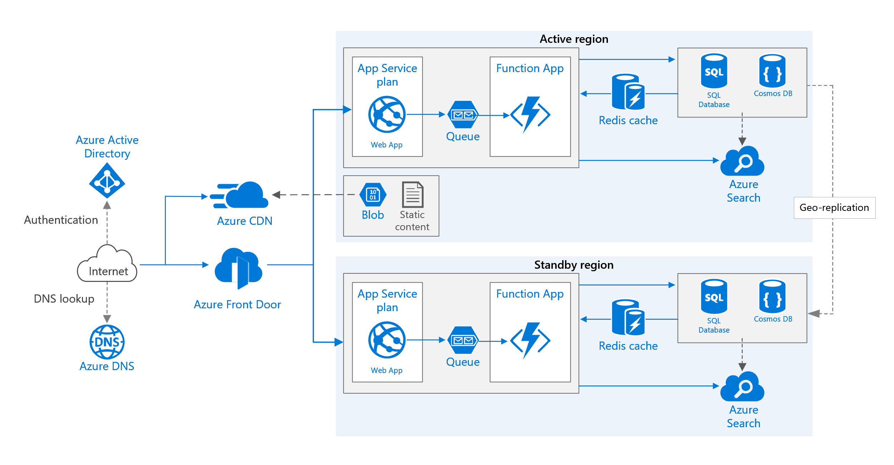

Cloud Providers and the IaC hell
Agenda
IaC and Infrastructure
| Welcome |
| Apps and infrastructure |
| Dynamic infra and Cloud providers |
IaC and Cloud
| RAW IaC and SDKs |
| Playing with stacks |
| Multi-Cloud |
| Stacks management with code |
IaC and Kubernetes
| Kubernetes |
| K8s, Cloud providers and operators |
| YAMLs… Where are we going? |
| Closure |
Who are you?
- Sr SRE Engineer @ Fastly
- Part time (Devops) lecturer @ La Salle University
- Previously working @ Schibsted, NTT, Oracle…
- Eventual OSS contributions
- And tcpgoon

IaC and Infrastructure
Distributed systems are here to stay
And we don’t want to manage them “by hand”
Dynamic infrastructure was possible in on-premises platforms thanks to:
- Configuration management systems
- Vendors CLIs and APIs
- Virtualization
- Tons of scripting
IaC is not a new concept
We previously called that infra automation/orchestration
But Cloud is about others managing your infra, right? Why should we care?

Cloud brings big services’ portfolios you can compose to build your Internet-scale platform
And a plus: consistency across components
- Authentication / permissions management (IAM)
- APIs
- SDKs / libs to interact with them
But apps still require a specific infrastructure configuration
Also applies to PaaS
And why IaC? Why is it a Devops pillar?
Allows applying the same patterns than apps code
Enhances collaboration and tracking
Makes infra reproducible
IaC and Cloud
IaC and Cloud
| RAW IaC and SDKs |
| Playing with stacks |
| Stacks management with code |
| Multi-Cloud |
RAW IaC and SDKs
CLIs and scripting
#!/bin/bash
aws elb create-load-balancer --load-balancer-name MyLoadBalancer \
--listeners "Protocol=HTTP,LoadBalancerPort=80,InstanceProtocol=HTTP,InstancePort=80" \
--availability-zones us-east-1a
for i in `seq 1 2`; do
EC2_RUN_RESULT=$(ec2-run-instances --instance-type t2.micro --group default --region us-east-1 --key $EC2_INSTANCE_KEY --user-data-file instance_installs.sh ami-5244a300)
INSTANCE_NAME=$(echo ${EC2_RUN_RESULT} | sed 's/RESERVATION.*INSTANCE //' | sed 's/ .*//')$i
times=0
echo
while [ 5 -gt $times ] && ! ec2-describe-instances $INSTANCE_NAME | grep -q "running"
do
times=$(( $times + 1 ))
echo Attempt $times at verifying $INSTANCE_NAME is running...
done
if [ 5 -eq $times ]; then
echo Instance $INSTANCE_NAME is not running. Exiting...
exit
fi
aws elb register-instances-with-load-balancer --load-balancer-name MyLoadBalancer --instances $INSTANCE_NAME
done
API calls
import boto3
s3 = boto3.client('s3')
bucket_name = 'my-bucket'
s3.create_bucket(bucket_name)
filename = 'file.txt'
s3.upload_file(filename, bucket_name, filename)
Playing with stacks
Cloudformation
{
"AWSTemplateFormatVersion": "2010-09-09",
"Resources": {
"S3Bucket": {
"Type": "AWS::S3::Bucket"
},
},
"Outputs": {
"S3BucketSecureURL": {
"Value": {
"Fn::Join": [
"",
[
"https://",
{
"Fn::GetAtt": [
"S3Bucket",
"DomainName"
]
}
]
]
},
"Description": "Name of S3 bucket"
}
}
}
Google deployment manager
resources:
- type: storage.v1.bucket
name: test-bucket
properties:
project: my-project
name: test-bucket-name
Stacks management with code
Troposphere
from troposphere
import Output, Ref, Template
from troposphere.s3
import Bucket, PublicRead
t = Template()
t.add_description(
"AWS CloudFormation Sample Template”
s3bucket = t.add_resource(Bucket("S3Bucket", AccessControl = PublicRead, ))
t.add_output(Output(
"BucketName",
Value = Ref(s3bucket),
Description = "Name of S3 bucket to hold website content"
))
print(t.to_json())
AWS CDK
Amazon Cloud Development Kit
from aws_cdk import (
aws_s3 as s3,
cdk
)
bucket = s3.Bucket(self,
"MyFirstBucket",
versioned=True,
encryption=s3.BucketEncryption.KmsManaged,)
troposphere, but multi-language plus “building blocks”
Multi-Cloud
Terraform
provider "aws" {
region = "us-west-2"
}
resource "aws_s3_bucket" "example" {
bucket = "my-test-s3-terraform-bucket"
acl = "private"
versioning {
enabled = true
}
tags {
Name = "my-test-s3-terraform-bucket"
}
}
Pulumi
package main
import (
"github.com/pulumi/pulumi-gcp/sdk/go/gcp/storage"
"github.com/pulumi/pulumi/sdk/go/pulumi"
)
func main() {
pulumi.Run(func(ctx *pulumi.Context) error {
// NewBucket already adds a random suffix
bucket, err := storage.NewBucket(ctx, "pulumi-bucket", &storage.BucketArgs{
Location: "EU",
})
if err != nil {
return err
}
ctx.Export("bucketName", bucket.ID())
ctx.Export("websiteUrl", bucket.Url())
return nil
})
}
IaC and Kubernetes
IaC and Kubernetes
| Kubernetes |
| K8s, Cloud providers and operators |
| Is there a future without YAML? |
| Closure |
k8s
Objects, objects and objects…

Describing objects with YAML
apiVersion: apps/v1
kind: Deployment
metadata:
name: nginx-deployment
labels:
app: nginx
spec:
replicas: 3
selector:
matchLabels:
app: nginx
template:
metadata:
labels:
app: nginx
spec:
containers:
- name: nginx
image: nginx:1.7.9
ports:
- containerPort: 80
Helm
apiVersion: v1
kind: Pod
metadata:
name: {{ template "alpine.fullname" . }}
labels:
app.kubernetes.io/managed-by: {{ .Release.Service }}
app.kubernetes.io/instance: {{ .Release.Name | quote }}
app.kubernetes.io/version: {{ .Chart.AppVersion | quote }}
helm.sh/chart: {{ .Chart.Name }}-{{ .Chart.Version }}
app.kubernetes.io/name: {{ template "alpine.name" . }}
spec:
restartPolicy: {{ .Values.restartPolicy }}
containers:
- name: waiter
image: "{{ .Values.image.repository }}:{{ .Values.image.tag }}"
imagePullPolicy: {{ .Values.image.pullPolicy }}
command: ["/bin/sleep", "9000"]
kustomize
kustomization.yaml:
commonLabels:
env: production
bases:
- ../../base
patches:
- replica_count.yaml
replica_count.yaml:
apiVersion: apps/v1
kind: Deployment
metadata:
name: the-deployment
spec:
replicas: 100
K8s, Cloud providers and operators


Use case: k8s management with GitOps

Use case: managing external resources
apiVersion: service-operator.aws/v1alpha1
kind: DynamoDB
metadata:
name: dynamo-table
spec:
hashAttribute:
name: name
type: S
rangeAttribute:
name: created_at
type: S
readCapacityUnits: 5
writeCapacityUnits: 5

Is there a future without YAML?

There are build/deployment tools describing and pushing infrastructure changes
# serverless.yml
service: usersCrud
provider: aws
functions:
resources: # CloudFormation template syntax
Resources:
usersTable:
Type: AWS::DynamoDB::Table
Properties:
TableName: usersTable
AttributeDefinitions:
- AttributeName: email
AttributeType: S
KeySchema:
- AttributeName: email
KeyType: HASH
ProvisionedThroughput:
ReadCapacityUnits: 1
WriteCapacityUnits: 1
We can still consume SDKs/APIs!
Golang and the k8s API client:
deployment := &appsv1.Deployment{
ObjectMeta: metav1.ObjectMeta{
Name: "demo-deployment",
},
Spec: appsv1.DeploymentSpec{
Replicas: int32Ptr(2),
Template: apiv1.PodTemplateSpec{
Spec: apiv1.PodSpec{
Containers: []apiv1.Container{
{
Name: "web",
Image: "nginx:1.12",
Ports: []apiv1.ContainerPort{
{
Name: "http",
Protocol: apiv1.ProtocolTCP,
ContainerPort: 80,
},
},
},
},
},
},
},
}
And we are also able to generate config programmatically…
Terrascript:
from terrascript import Terrascript, provider
from terrascript.aws.r import aws_instance
ts = Terrascript()
# Add a provider (+= syntax)
ts += provider('aws', access_key='ACCESS_KEY_HERE',
secret_key='SECRET_KEY_HERE', region='us-east-1')
# Add an AWS EC2 instance (add() syntax).
inst = ts.add(aws_instance('example', ami='ami-2757f631', instance_type='t2.micro'))
# Print the JSON-style configuration to stdout.
print(ts.dump())
While we may see Hashicorp reacting to actual “code”
AWS CDK and Pulumi

Closure
Final remarks
IaC plays an important role in Devops and cloud apps
PaaS and k8s still require IaC
There are plenty of IaC options
More abstraction layers to interact with Infra/Compute platforms are still being added